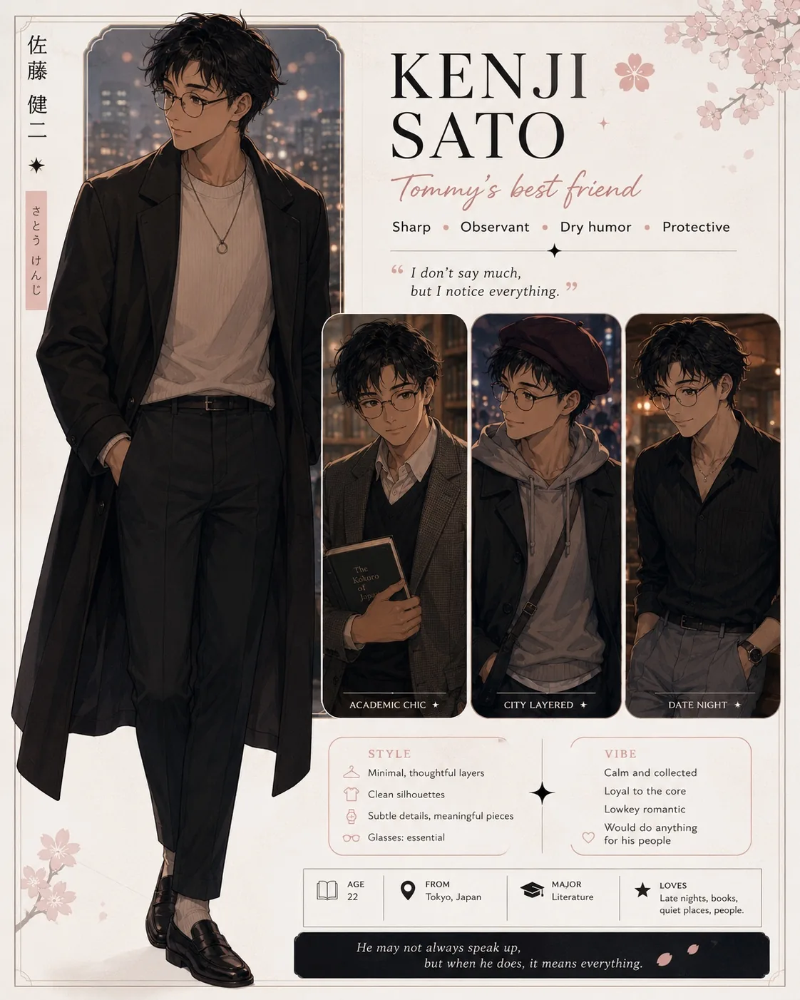

Affection0
Route Stat0
Self Respect0
Tommy Gravity0
Tommy Honesty0
Tap the dialogue box or Next to advance text.
Enter the name you want the boys and friends to call the main character. Canon/default name is Airi.
Demo note: this replaces visible “Airi” dialogue text with your chosen name.
All six mini-routes are playable. This V5.6.16 polished build keeps the English/Japanese mode, visible cheat entry, corrected route cards, Ren updates, and the expanded Harrison, Marcus, and Tommy rebuilds.
20 save slots. Saves are stored in this browser with localStorage.
Play scenes to unlock route CGs, character shots, Tommy interruptions, bad endings, and secret endings.
Airi thought love was enough. It never was. This non-canon route simulator lets you test the routes, unlock endings, collect CGs, and watch Tommy ruin things with suspicious efficiency. V5.6.16 polishes the bilingual build, keeps the visible NO MORE MAYBE cheat entry, deepens Ren, and preserves the rebuilt Harrison, Marcus, and Tommy routes with the newer scene-image mapping.
Ultra Hidden File
A route that should not exist can only open after the game knows you survived the truth first.
Choose the language for menus, choices, and the Japanese localization draft.
Original script and UI.
日本語UIとローカライズ草稿でプレイします。
Japanese mode is built as a localization layer, so the translation can be polished route by route without changing the game engine.

Quiet • Familiar • Home
His picture is now viewable. The secret card will stay revealed on the main menu and route select from now on.
Ending Unlocked